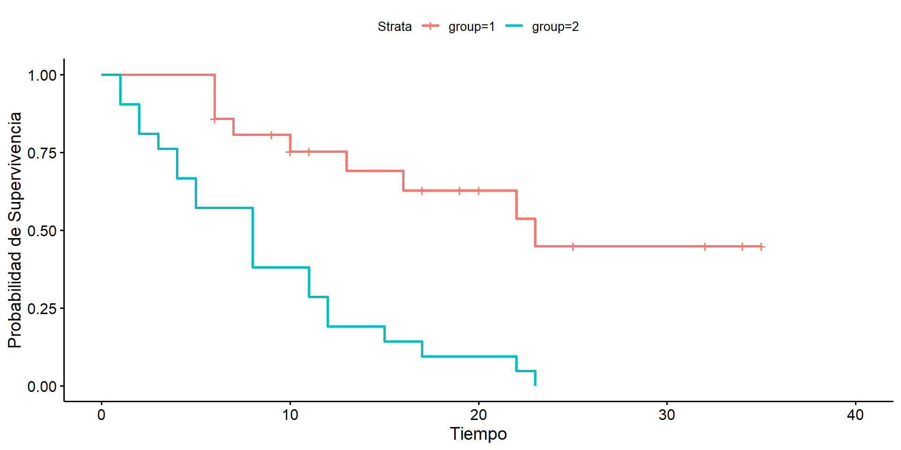
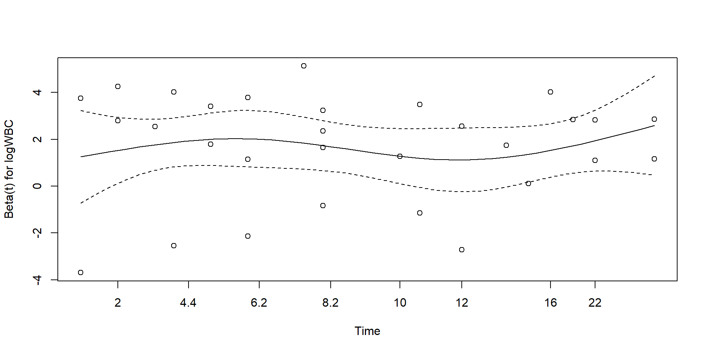
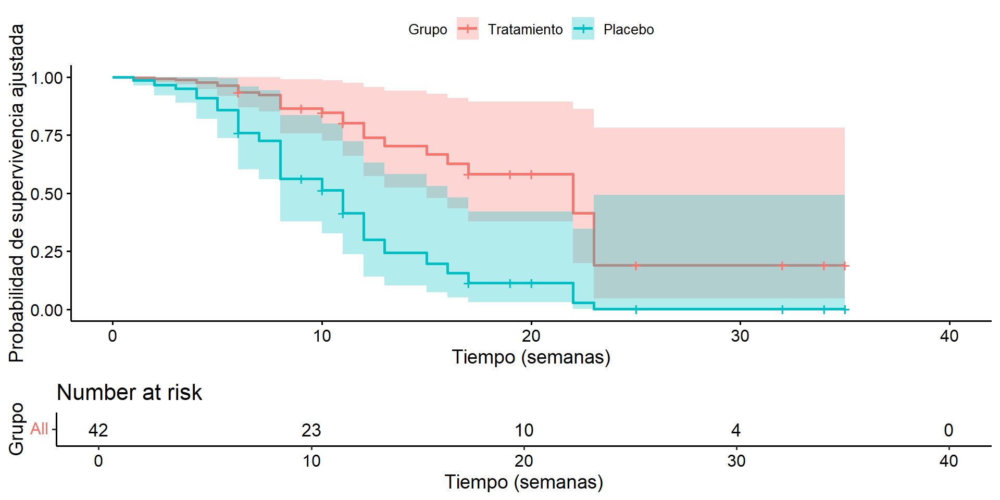

La razón de riesgos entre dos individuos: \[
\frac{h(t|X_1)}{h(t|X_2)} = \exp(\beta^T(X_1 - X_2))
\] compara el riesgo de dos individuos con distintos valores de covariables \(X_1\) y \(X_2\), en el mismo tiempo \(t\).
No depende del tiempo → proporcionalidad.
Si las funciones de riesgo se cruzan, la suposición PH se viola.
Ejemplo concreto
Supongamos un modelo con dos covariables:
tratamiento: 0 = control, 1 = experimental
edad: en años
Y los coeficientes estimados son:
\(\beta = (-0.5, 0.04)\)
# Vectores de covariables para dos individuosX1 <-c(tratamiento =1, edad =60)X2 <-c(tratamiento =0, edad =60)# Coeficientes estimados del modelobeta <-c(-0.5, 0.04)# Cálculo de la razón de riesgosHR <-exp(sum(beta * (X1 - X2)))HR
Explicación: Este conjunto representa a pacientes con leucemia, donde time es el tiempo hasta recaída (o censura), status indica si ocurrió el evento (1) o no (0), group es el tratamiento (1 = tratado, 2 = placebo) y logWBC es el logaritmo del conteo de glóbulos blancos.
summary(leukemia)
time status group logWBC
Min. : 1.00 Min. :0.0000 Min. :1.0 Min. :1.450
1st Qu.: 6.00 1st Qu.:0.0000 1st Qu.:1.0 1st Qu.:2.303
Median :10.50 Median :1.0000 Median :1.5 Median :2.800
Mean :12.88 Mean :0.7143 Mean :1.5 Mean :2.930
3rd Qu.:18.50 3rd Qu.:1.0000 3rd Qu.:2.0 3rd Qu.:3.490
Max. :35.00 Max. :1.0000 Max. :2.0 Max. :5.000
table(leukemia$status,leukemia$group)
1 2
0 12 0
1 9 21
fit <-survfit(Surv(time, status) ~ group, data = leukemia)ggsurvplot(fit, xlab ="Tiempo", ylab ="Probabilidad de Supervivencia")

cox_model <-coxph(Surv(time, status) ~factor(group) + logWBC, data = leukemia)summary(cox_model)
Call:
coxph(formula = Surv(time, status) ~ factor(group) + logWBC,
data = leukemia)
n= 42, number of events= 30
coef exp(coef) se(coef) z Pr(>|z|)
factor(group)2 1.3861 3.9991 0.4248 3.263 0.0011 **
logWBC 1.6909 5.4243 0.3359 5.034 4.8e-07 ***
---
Signif. codes: 0 '***' 0.001 '**' 0.01 '*' 0.05 '.' 0.1 ' ' 1
exp(coef) exp(-coef) lower .95 upper .95
factor(group)2 3.999 0.2501 1.739 9.195
logWBC 5.424 0.1844 2.808 10.478
Concordance= 0.852 (se = 0.04 )
Likelihood ratio test= 46.71 on 2 df, p=7e-11
Wald test = 33.6 on 2 df, p=5e-08
Score (logrank) test = 46.07 on 2 df, p=1e-10
Explicación: El modelo de Cox ajusta el riesgo de recaída según el tratamiento y logWBC. factor(group) permite comparar placebo contra tratamiento. La salida incluye coeficientes beta, errores estándar, valor z y p-valor.
Interpretación del modelo (HR e IC)
exp(coef(cox_model)) # Razón de riesgo (HR)
factor(group)2 logWBC
3.999125 5.424308
exp(confint(cox_model)) # Intervalo de confianza del 95% para HR
Explicación: Aquí se presentan los coeficientes exponenciados, que se interpretan como razones de riesgo (HR). Un HR > 1 indica mayor riesgo relativo; HR < 1 sugiere efecto protector. El intervalo de confianza permite evaluar si el efecto es estadísticamente significativo (no debe incluir 1).
Evaluación de la suposición de riesgos proporcionales
test_ph <-cox.zph(cox_model)test_ph
chisq df p
factor(group) 8.27e-05 1 0.99
logWBC 4.00e-02 1 0.84
GLOBAL 4.02e-02 2 0.98
plot(test_ph)

Hipótesis evaluadas con cox.zph()
Hipótesis nula (\(H_0\)): la covariable cumple la suposición de riesgos proporcionales (el efecto de la covariable es constante en el tiempo).
Hipótesis alternativa (\(H_1\)): la covariable no cumple la suposición de riesgos proporcionales (el efecto cambia con el tiempo).
Un p-valor menor a 0.05 indica que se rechaza la hipótesis nula, sugiriendo que la suposición de riesgos proporcionales no se cumple para esa covariable.
El gráfico asociado muestra residuos de Schoenfeld.
Curvas de supervivencia ajustadas

Explicación: Se grafican las curvas de supervivencia estimadas para un paciente con nivel medio de logWBC, comparando tratamiento vs placebo. El risk.table muestra cuántos pacientes permanecen en riesgo a lo largo del tiempo.
Evaluación de la Suposición PH
1. Gráficas:
Curvas log(-log) paralelas.
Gráficas de Schoenfeld residuals.
2. Pruebas formales:
Test global de PH (e.g., cox.zph en R).
3. Extensión con covariables dependientes del tiempo:
Incluir interacción con función del tiempo.
Evaluación de proporcionalidad: Curvas log(-log)
Otra forma gráfica de verificar la suposición de riesgos proporcionales.
Se grafican curvas:
\[
\log\{-\log[\hat{S}(t)]\}
\]
Se esperan curvas paralelas si la suposición PH se cumple.
Se usa típicamente para comparar grupos categóricos (ej. tratamiento vs placebo).
Se ajusta una curva de suavizado (por ejemplo, LOESS):
Si la curva es horizontal, el efecto de la covariable es constante.
Si tiene pendiente creciente o decreciente, sugiere que el efecto cambia con el tiempo → violación de la suposición PH.
Ejemplo de interpretación:
Línea plana: suposición PH razonable
Tendencia ascendente: el efecto crece con el tiempo
Tendencia descendente: el efecto decrece con el tiempo
Test global de PH con cox.zph()
¿Qué evalúa?
Contrasta la hipótesis nula de que el efecto de cada covariable es constante en el tiempo.
Evalúa la proporcionalidad de riesgos para cada covariable y de forma global.
Hipótesis:
\(H_0\): la covariable cumple la suposición PH (efecto constante en el tiempo)
\(H_1\): el efecto varía con el tiempo
Un p-valor bajo (< 0.05) indica que se viola la suposición PH para esa covariable o globalmente.
Ejemplo en R
test_ph <-cox.zph(cox_model)test_ph
chisq df p
factor(group) 8.27e-05 1 0.99
logWBC 4.00e-02 1 0.84
GLOBAL 4.02e-02 2 0.98
Esto muestra una tabla con:
Una fila por covariable y una para el test global
Estadístico chi-cuadrado y p-valor asociado
Interpretación:
Si el test global es significativo, el modelo no cumple con PH en general.
Si solo una covariable tiene p < 0.05, considerar transformaciones o modelos extendidos.
Soluciones a Violaciones de PH
Modelo estratificado:
\(h_0(t)\) específico por estrato.
Modelo extendido:
Términos dependientes del tiempo.
Conclusiones
Modelo robusto y versátil.
Permite ajustar múltiples covariables.
Ideal para datos censurados.
Evaluar la suposición PH es crucial.
Referencias
Freireich, E. J., Karon, M., Frei, E., Holland, J. F., Taylor, R., Hananian, J., Selawry, O., Hoogstraten, B., Wolman, I. J., Abir, E., Sawitsky, A., Lee, S., Mills, S. D., Burgert, E. O. J., Spurr, C. L., Patterson, R. B., Ebaugh, F. G., James, G. W., & Moon, J. H. (1963). The effect of 6‑mercaptopurine on the duration of steroid‑induced remissions in acute leukemia: A model for evaluation of antileukemic agents. Blood, 21(6), 699–716.
Klein, J. P., & Moeschberger, M. L. (2003). Survival analysis: Techniques for censored and truncated data (2nd ed.). Springer.